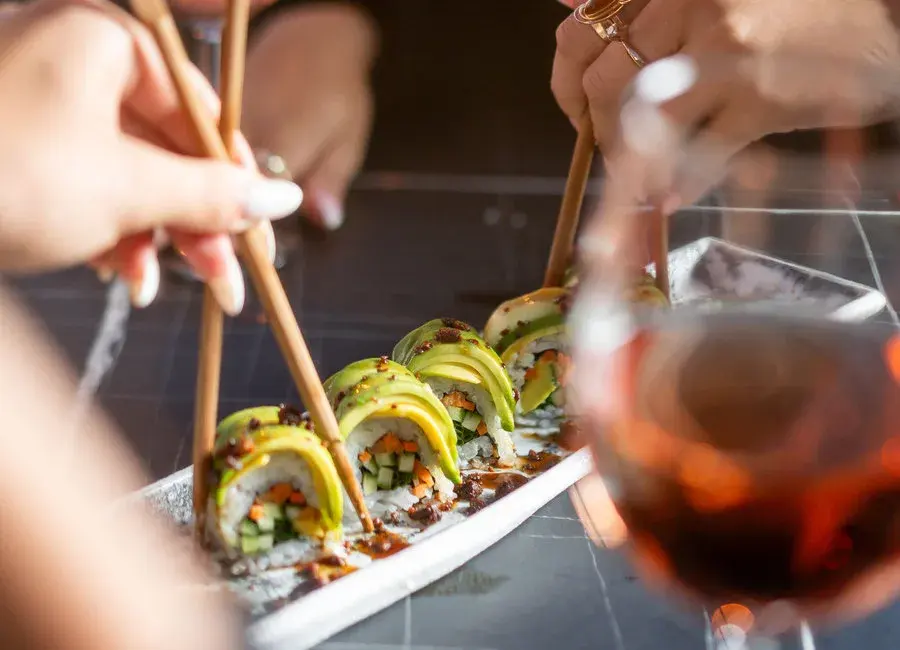

צילום: אתר Kira Rooftop המדריך הקולינרי של אשדוד
מסעדות
וקולינריה.
עיר של ים.
עולם של טעמים.
מהדגים של הנמל לקפה של הבוקר, מארוחה טובה לערב שנשארים בו עוד קצת. בואו למצוא את המקום שלכם.
לאן הולכים לאכול?ASHDOD / FOOD & CULTUREים תיכון. שולחן פתוח.
כל יציאה מתחילה בחשק
מה מתחשק לכם?
בחרו את האווירה של הבילויהמקומות. האנשים. הטעמים.
מוצאים את השולחן הבא
טוענים את המקומות…
הזמנת שולחן ותפריטים זמינים דרך אתרי המקומות ומערכות ההזמנה. שעות פעילות, כשרות ומחירים כדאי לוודא מול המסעדה לפני היציאה.
נבדק ב־19.10.2026הטעם המקומיים אחד.
ים אחד.
הרבה שפות של אוכל.
באשדוד, הדרך להכיר את העיר עוברת גם בשולחן. דגים וים, מטבחים שעברו בין דורות, קפה של בוקר ומקומות שפותחים את הערב.
ממשיכים לבילוי בעיר